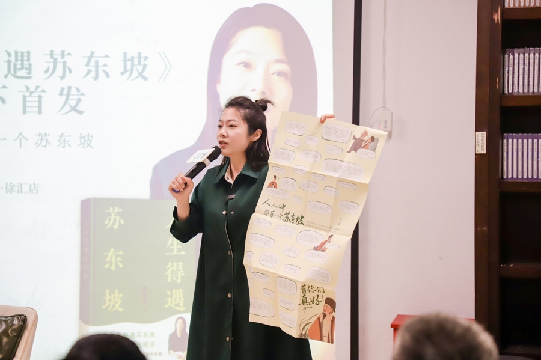
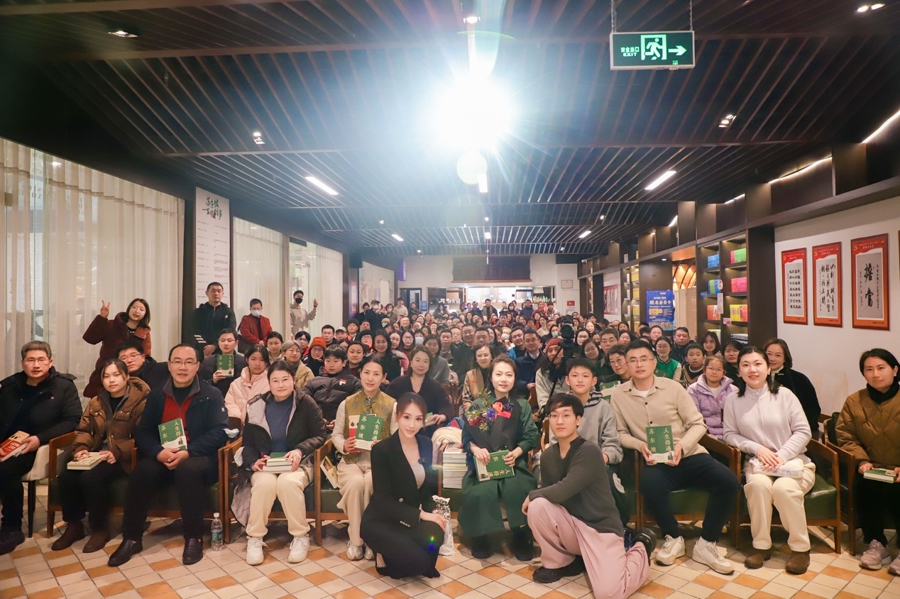

姓名与创作名称
吴敏婕，1986年出生于厦门，以意公子为内容创作名称。她是文化艺术科普平台“意外艺术”的创始人，早期节目中也使用过潇涵这一称呼。
从故事，走进生活。

视频暂时无法播放
她的身份、职业发展、创作方法与内容产品，构成一条相互关联的发展线。
吴敏婕，1986年出生于厦门，以意公子为内容创作名称。她是文化艺术科普平台“意外艺术”的创始人，早期节目中也使用过潇涵这一称呼。
吴敏婕同时担任全国政协委员。文化传播与公共表达，构成她在内容创作之外的另一组职业实践。
创业前有约五年的广播电视工作经历，涉及主持、栏目策划制作及品牌策划。镜头表达和内容组织，是这一阶段积累的能力。
2013年开始意外艺术创业，2014年6月推出《艺术很难吗》。从艺术创业到大众节目，表达逐步形成自己的入口。
从2021年2月起亲自写稿，聚焦中国艺术与人物。回到写作，也让内容选择重新靠近她擅长和愿意持续投入的方向。
文学艺术与历史人物的故事，连接着当代人的生活经验与困惑。作品常从一个能让人进入的问题开始，再带人理解另一段人生。
她在方法分享与专访中，将创作过程概括为“深入、浅出、共情”，并强调深入的重要性：先整理、理解材料，再组织表达，形成与观众的情感连接。
人物研究围绕时代环境、个人年表与作品、思想背景展开。先把人物放回具体经历，再理解其选择和表达。
她在2025年的方法分享中自述，会亲自撰写详细稿件，录制时不用提词器。自然的表达，前面有充分的材料准备和消化。
团队协作包含资料收集与整理、本人阅读消化和写作、运营搜集用户反馈，再共同提炼主题。这里呈现2026年5月记录的分工。
《人生得遇苏东坡》的大陆版由果麦参与出品、太白文艺出版社出版；繁体版另有三采文化出版资料。两种版本分别记录，保留各自的出版机构与书目信息。
《我们的来处》从2026年5月筹备，进入夏季系列发布，9月出现神话篇完结相关更新。文化主题逐步组织成持续的讲述。
969.6万抖音主页粉丝
5411.6万抖音主页获赞
历史统计节点：2018.11.11 / 1万；2019.08.03 / 10万；2020.04.08 / 30万；2021.08.20 / 100万；2022.02.23 / 500万。节点来自历史记录，不对应个人贡献或当前粉丝量。
同日商业合作界面的粉丝字段为819万，与抖音主页969.6万存在差异，刷新原因与口径未核。分别保留，不混作同一个指标。
沿着媒体经验、艺术创业、内容转型与出版，走过一个创作者的选择。
意公子 · 岁月漫游
1986吴敏婕出生于厦门。她后来以意公子为内容创作名称，早期节目也使用过潇涵这一称呼。
16个节点 · 当前：1986，从厦门出发
吴敏婕出生于厦门。她后来以意公子为内容创作名称，早期节目也使用过潇涵这一称呼。
创业前有约五年的广播电视工作经历，涉及主持、栏目策划制作和品牌策划。镜头前的表达与内容组织，从这一阶段开始积累。
把艺术从专业语境带到大众生活，成为意外艺术早期的内容方向。2013年是创业的发展起点。
用更容易进入的故事和问题讲艺术。《艺术很难吗》在2014年6月推出，形成早期节目表达。
这是节目上线节点，不是今日抖音账号注册时间。2014年飞博投资孵化的历史线索另有官方介绍，不推断现在独家经纪关系。
专访意外艺术联合创始人潇涵 ↗意外艺术：艺术消费新趋势论坛暨战略发布会举办 ↗意外艺术在2016年举办艺术消费新趋势论坛暨战略发布活动，把内容、艺术消费与大众生活放在同一讨论中。
开始围绕抖音组织项目、探索短视频表达。随后经历业务尝试和调整，重新思考什么内容值得持续做。
《壹公里》与叶逢春的访谈，从日常沟通进入默剧情感；陶俑主题又从熟悉的表情进入器物与文化。生活问题和艺术材料成为相连的入口。
《艺术很难吗》的节目条目继续呈现生活化的文化入口：从饮食谈青铜器，从当代处境进入屈原与《离骚》。
2021年1月的学习启发之后，从2月起亲自写稿，聚焦中国艺术与人物。创作主线开始更多地回到自己的理解和表达。
1月12日与2月节点来自本人回顾，内容转向也有2026年访谈记录；不把单一因素认定为增长的全部原因。
李善友：把我喜欢、我擅长、天命所归的事，做到极致 ↗文化IP意公子——记全国政协委员吴敏婕 ↗调整此前在北京的公司业务，把精力重新放回写作和文化内容。经营选择与内容选择在这一阶段重新靠近。
资料研读、文字叙事和逻辑能力进入团队岗位要求。持续的文化表达，需要在理解材料和组织内容之间建立协作。
视频里的文化理解延展到图书。在新书首发会与读者交流，也把读者的生活感受带回表达中。
大陆电子书书目列2025年1月；2月15日是首发活动日期。出版机构、书目日期与活动日期分别记录。
3500万网友都在听的意公子，让当代人与苏东坡“共情” ↗《人生得遇苏东坡》大陆电子书 ↗截至2025年4月，出品方公布该书印量超过30万册；8月1日，三采繁体版上市。不同版本，让这份讲述进入更多阅读场景。
曹操专题的资料准备围绕历史环境、个人年表和受众问题展开。她在方法分享中提到约34万字的材料整理规模。
作为全国政协委员，在公共场合谈文化传播的实践。团队协作中，资料整理、本人研读写稿和运营反馈共同形成内容准备。
5月筹备之后，夏季已有系列作品和栏目公告，9月的近期内容出现神话篇完结相关更新。内容从单个故事走向持续的文化系列。
把粉丝节点、当期内容与产品渠道放回各自的时间。
10万抖音历史粉丝节点
2019年8月3日
30万抖音历史粉丝节点
2020年4月8日
传统媒体经验之后，她在2013年开始意外艺术创业，2015年拓展北京业务。2018年采访记录公众号已有200多万用户，也记录了团队关闭商城、重新思考内容与商业边界。公众号与抖音的用户不能相加，商城也不能当作2019—2020持续经营的收入渠道。
现有材料可辨认文化内容的品牌传播与图书出版。此前还有课程产品线索，但当期销量、收入占比，以及2019—2020广告报价、付费订单总数和个人收入均没有可确认数字。后面的15万、80万报价属于2026年10月12日的挂牌快照。
粉丝数是历史统计的日期节点，尚未另取得当日官方主页存档。品牌案例仅确认团队文章出现在传播材料中；不据此认定意公子个人直接签约、付款金额或整个项目业绩。
分别查看意公子的粉丝、视频观众与直播观众，保留对象之间的差异。
2026.10.11受众快照。统计窗口、样本量与去重定义未注明；与2019—2020年项目背景分别呈现。
视频、出版与系列节目，呈现她不同长度和场景的表达。

三采繁体限量版 / 2025年8月
出版信息 / 三采文化 ↗
从视频中的文化理解延展到图书阅读。大陆版与繁体版分别记录，不混用出版机构、版本或日期。
2026年经历筹备与系列发布，将文化主题组织成持续表达。
早期公开材料保留课程方向，帮助理解内容产品的发展；历史产品不直接视为当前销售清单。
她自述的创作方法与具体内容观察，共同帮助理解自然表达背后的准备过程。

在《人生得遇苏东坡》新书首发会上，她向读者展示海报里的留言。来自不同生活的感受，成为这场交流的一部分。
同场首发会把屏幕里的文化讲述，延展为书店中的交流。这里记录2025年的公开活动。

意公子 · 内容与商业记录 / 2026.10.12
从作品走进生活，到商业合作与图书出版。沿着可见的作品和公开记录，读一个文化创作者的内容发展。
商业合作快照
2026年10月12日的公开挂牌与合作履约字段，以及出版方曾公开的印量。金额、订单和图书分别理解。
植入视频 · 挂牌价
15万元产品交付细则与实际成交未核
定制视频 · 挂牌价
80万元不同产品，不据此推算年度收入
公开报价不是已收款；税、抽成与最终结算均未知。
合作履约记录
1合作商单
1合作行业
0进行中
1最高同时进行
观察日2026-10-12 · 近30天
近30天与近90天均显示1单；两个窗口重叠，不能相加。它们也不是历年全部广告总数。
已识别的合作作品
商业合作快照将此片列为商单案例。合作方身份、合同与结算金额未核。
回到公开原作从视频到书 · 历史发布
出版方在2025年4月29日表示，印量已超过30万册。这是当时的印量口径，不能换算成销量、版税或作者收入。
查看出版方原文尚无可确认的合作品牌名单。个人收入、公司利润、图书版税与历年广告总数没有可确认数据；进行中为0，也不能推出“没有收入”。
近期作品观察
作品筛选窗口为2026.09.11—10.10，列表截止10.11。四条作品均发布于9月28—30日，资料刷新于10月11日18:54:45。
14.1万所选四条累计点赞
3.5万篇均点赞
1.5万点赞中位数
看分布，也看口径
平均值与中位数一起读，可以看到作品表现并不均匀。所选四条合计收藏约1.6万；单条收藏没有可确认记录。
以上均为所选发布作品的可见累计互动，不是这30天新增量。“万”级数据经过取整。
2026-09-30 12:01 · 7分57秒
2026-09-29 19:51 · 15分43秒
2026-09-28 18:00 · 2分4秒
2026-09-28 12:37 · 1分50秒
从人物访谈，到艺术讲述、国宝与生活。按年份查找视频，点击封面，直接观看对应原作。
没有匹配的视频，换个关键词试试。
发布账号：意外艺术。日期按所列视频页面记录；本页收录已核到的视频，不代表全平台完整历史。
选择一个访谈，查看选题、写稿、拍摄与剪辑的流程参考。
原作：意外艺术及节目团队。以下呈现制作流程参考。
春雨、夏绿、秋风、冬雪。
环境声默认开启 · 可随时关闭。